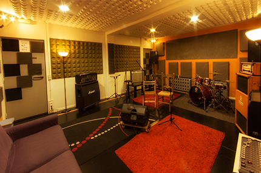
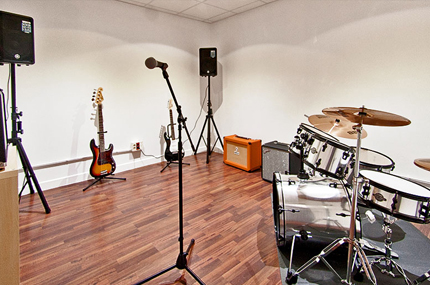
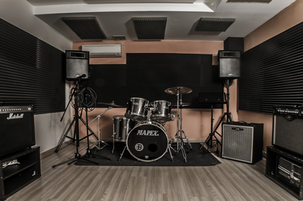
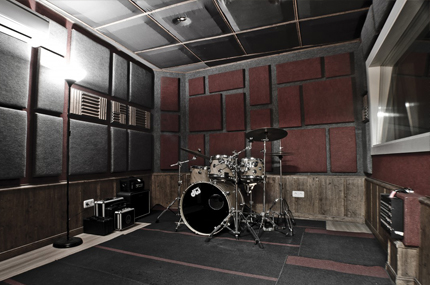
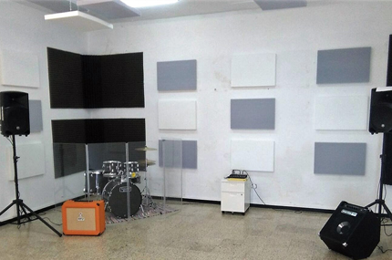
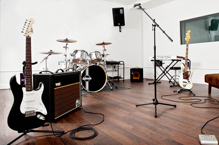
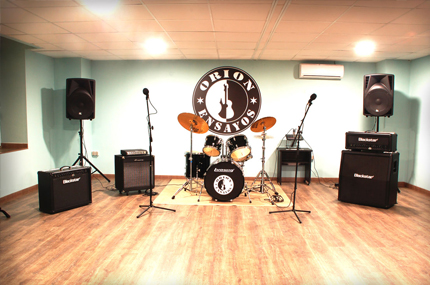
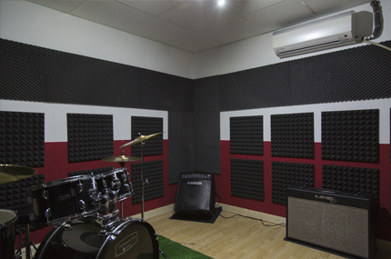
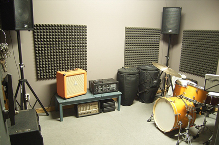
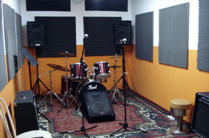

<div class="bgc--grey">
  <div class="container">
    <div class="carousel">
      <div class="media">
        <h2 class="media__title">Algunos de nuestros colaboradores</h2>
      </div>
      <drag-scroll class="scroll-container" #nav [scrollbar-hidden]="hidden"
      (indexChanged)="onIndexChanged($event)"
      (reachesLeftBound)="[leftBoundStat($event),autoMovement($event)]"
      (reachesRightBound)="[rightBoundStat($event),autoMovement($event)]"
      [snap-duration]="1500" >
        
        
        
        
        
        
        
        
        
        

      </drag-scroll>
      <div class="container-btns">

          <svg (click)="moveLeft()" class="arrow arrow--left" xmlns="http://www.w3.org/2000/svg" width="24" height="24" viewBox="0 0 24 24" fill="none" stroke="currentColor" stroke-width="2" stroke-linecap="round" stroke-linejoin="round"><polyline points="9 18 15 12 9 6"></polyline></svg>


          <svg (click)="moveRight()" class="arrow" xmlns="http://www.w3.org/2000/svg" width="24" height="24" viewBox="0 0 24 24" fill="none" stroke="currentColor" stroke-width="2" stroke-linecap="round" stroke-linejoin="round"><polyline points="9 18 15 12 9 6"></polyline></svg>

        <!-- <button class="btn" (click)="moveTo(2)">Last</button> -->
      </div>
    </div>
  </div>
</div>
